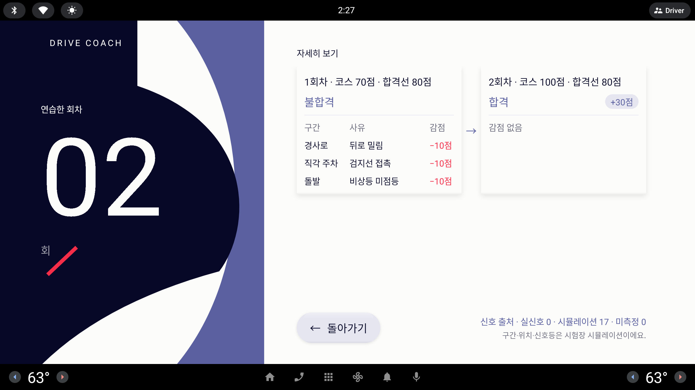

자세히 보기 — 다섯 가지 구성
리포트 "자세히 보기"의 오른쪽 면만 다시 짠다. 왼쪽 포스터(연습한 회차 02)는 그대로 두고, 모든 카드에 질감 그림자를 쓴다.
사용자 피드백 (라운드 21)너무 많은 정보가 한 곳에 있어서 UX/UI 관점을 적용하여 … 전반적인 디자인 컨셉을 해치지 않는 이쁜 구성을 5가지 정도 제안
시안은 1/3 축소(853×423 px) — 실제 화면은 약 3배(2560×1268 dp). 이 화면은 숫자 허용.
지금 — 주차(lesson-details.png)

지금 — 코스(lesson-report-exam-details.png)

A · 주차
자세히 보기
1회차
숙련
60
안전
55
- 이동4회
- 시간44초
- 조향 왕복3
- 기어 전환2
- 근접1
- 급정지1
- 방향 편차17°
2회차최근
숙련 +40
100
안전 +45
100
- 이동−22회
- 시간−15초29초
- 조향 왕복−21
- 기어 전환−20
- 근접−10
- 급정지−10
- 방향 편차−15°2°
돌아가기
신호 출처 · 실신호 0 · 시뮬레이션 7 · 미측정 1
주차 과정만 측정했어요.
A · 코스
자세히 보기
1회차불합격
코스
70점
합격선 80점
- 경사로 · 뒤로 밀림−10점
- 직각 주차 · 검지선 접촉−10점
- 돌발 · 비상등 미점등−10점
2회차 · 최근합격
코스 +30
100점
합격선 80점
- 감점 없음
돌아가기
신호 출처 · 실신호 0 · 시뮬레이션 17 · 미측정 0
구간과 위치·신호등은 시험장 신호(시뮬레이션)로 측정했어요.
B · 주차
자세히 보기
| 항목 | 1회차 | 2회차 | 변화 |
|---|---|---|---|
| 숙련 | 60 | 100 | +40 |
| 안전 | 55 | 100 | +45 |
| 이동 | 4회 | 2회 | −2 |
| 시간 | 44초 | 29초 | −15초 |
| 조향 왕복 | 3 | 1 | −2 |
| 기어 전환 | 2 | 0 | −2 |
| 근접 | 1 | 0 | −1 |
| 급정지 | 1 | 0 | −1 |
| 방향 편차 | 17° | 2° | −15° |
돌아가기
신호 출처 · 실신호 0 · 시뮬레이션 7 · 미측정 1
주차 과정만 측정했어요.
B · 코스
자세히 보기 · 합격선 80점
| 구간 | 1회차 | 2회차 |
|---|---|---|
| 코스 점수 | 70점 | 100점 |
| 판정 | 불합격 | 합격 |
| 감점 | ||
| 경사로 | 뒤로 밀림−10점 | 감점 없음 |
| 직각 주차 | 검지선 접촉−10점 | 감점 없음 |
| 돌발 | 비상등 미점등−10점 | 감점 없음 |
돌아가기
신호 출처 · 실신호 0 · 시뮬레이션 17 · 미측정 0
구간과 위치·신호등은 시험장 신호(시뮬레이션)로 측정했어요.
C · 주차
자세히 보기
숙련
100
1회차 60에서 +40
안전
100
1회차 55에서 +45
회차별 과정 · 짧을수록 좋아요1회차2회차
이동4 → 2회
시간44 → 29초
조향 왕복3 → 1
기어 전환2 → 0
근접1 → 0
급정지1 → 0
방향 편차17° → 2°
돌아가기
신호 출처 · 실신호 0 · 시뮬레이션 7 · 미측정 1
주차 과정만 측정했어요.
C · 코스
자세히 보기
코스
100점 합격
1회차 70점 · 불합격에서 +30
코스 점수1회차2회차
합격선 80
1회차
70점 · 불합격
2회차
100점 · 합격
1회차 감점
경사로뒤로 밀림−10점
직각 주차검지선 접촉−10점
돌발비상등 미점등−10점
2회차감점 없음
돌아가기
신호 출처 · 실신호 0 · 시뮬레이션 17 · 미측정 0
구간과 위치·신호등은 시험장 신호(시뮬레이션)로 측정했어요.
D · 주차 — 요약 탭
자세히 보기
요약회차신호 출처
숙련
100
1회차보다 +40
안전
100
1회차보다 +45
이동
4 →2회
시간
44 →29초
조향 왕복
3 →1
방향 편차
17° →2°
돌아가기
실신호 0 · 시뮬레이션 7 · 미측정 1
주차 과정만 측정했어요.
D · 주차 — 회차 탭
자세히 보기
요약회차신호 출처
1회차숙련 60 · 안전 55
이동 4회44초조향 왕복 3기어 전환 2근접 1급정지 1방향 편차 17°
2회차 최근숙련 100 · 안전 100
이동 2회29초조향 왕복 1기어 전환 0근접 0급정지 0방향 편차 2°
돌아가기주차 과정만 측정했어요.
E · 주차 (최근 회차 펼침)
자세히 보기
숙련100안전100
2회차숙련 100 · 안전 100 · 이동 2회 · 29초
조향 왕복
1
기어 전환
0
근접
0
급정지
0
방향 편차
2°
1회차숙련 60 · 안전 55 · 이동 4회 · 44초
신호 출처실신호 0 · 시뮬레이션 7 · 미측정 1
돌아가기주차 과정만 측정했어요.
추천
C · 막대
결과(큰 숫자) → 과정(막대) 순서가 크기만으로 정해져 같은 정보량이 "한 곳에 몰린" 느낌 없이 읽히고, 코스 버전도 합격선 점선 하나로 같은 틀에 들어간다.
회차가 셋 이상이면 "첫 회차 · 최근 회차" 두 줄만 막대로 그리고, 신호 출처는 맨 아래 한 줄로 항상 보이게 둔다. 문서 느낌을 원하면 B(표)가 차선.